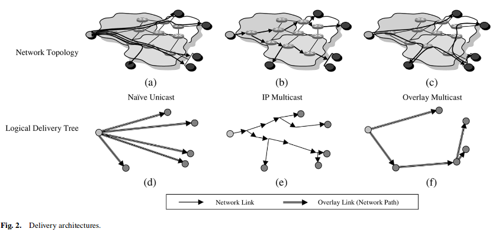
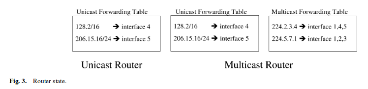
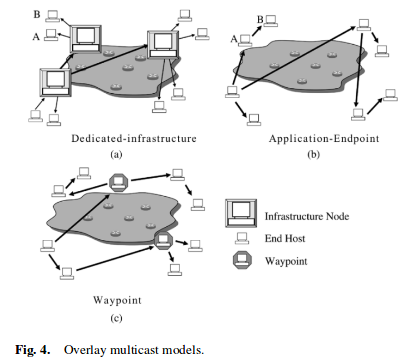
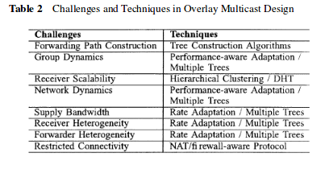
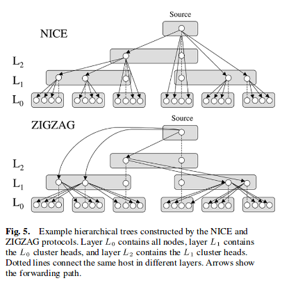
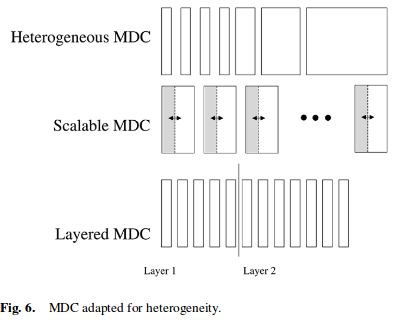

2017/02/16 - (Paper) Internet Multicast Video Delivery¶
Authors: ADITYA GANJAM AND HUI ZHANG
Published in: Proceedings of the IEEE ( Volume: 93, Issue: 1, Jan. 2005 )
Full text : IEEE link here.
Introduction¶
The Internet’s best effort unicast service model lacks both efficient multicast routing and quality of service(QoS) guarantees needed for high-quality point-to-multipoint and multipoint-to-multipoint video delivery.
Video on Demand ( VoD ) 1
Video on demand (display) (VOD) are systems which allow users to select and watch/listen to video or audio content such as movies and TV shows when they choose to, rather than having to watch at a specific broadcast time, which was the prevalent approach with over-the-air broadcasting during much of the 20th century. IPTV technology is often used to bring video on demand to televisions and personal computers.
The basic multicast functionality are as follows.
- (1). Group membership management:
A membership management protocol.
- (2). Data delivery path maintenance:
A control protocol must construct a delivery path that reaches all the receivers requesting the stream.
- (3). Replication and forwarding:
Interior nodes in the delivery path must replicate and forward the stream.
IP multicast was the first solution to provide multicast functionality in the Internet. A group address identifies a multicast group and any host can send a message to a group by simply sending to the group address. But unfortunately it has proven extremely difficult to do efficiently and at a large scale.
In contrast, overlay multicast use only end hosts connected to the network to perform multicast functionally.
Multicast Delivery Challenges¶
- Challenges
(1). Efficient delivery path construction.
(2). Handling group dynamics due to receivers joining and leaving the group.
- (3). Scalability - 3 dimensions:
(a). Number of multicast groups
(b). Number of receivers per group
(c). Number of senders per group
These challenges are related. Efficient delivery path construction is made more difficult by having to constantly change the delivery path due to group dynamics and is made significantly more important due to all dimensions of scalability.
The simplest multicast delivery architecture over the Internet, native unicast, sends a separate copy of the video from the source to each destination using the unicast path from the source to the destination as shown in Fig.2(a) and 2(d).
IP Multicast¶
Data originates from a sender, is replicated at routers as required, and is forwarded until it reaches a destination.
This abstraction is powerful for two reasons:
(1). Group addressing provides robust rendezvous mechanisms between senders and receivers in an application.
(2). Applications can communicate with a group the same way they communication with a single host, simplifying the use of multicast application.
A multicast router, in addition to the unicast forwarding table, requires a multicast forwarding table.
- The fact raises two key difference between the two tables:
(1). It is difficult to aggregate the multicast forwarding table.
(2). An entry in the multicast forwarding table may change when hosts join or leave any group. Unicast forwarding table my change only when routers in the network change.
- Protocols for Multicast Support
(1). Multicast Routing :
(a). Reverse-path multicasting (RPM) is a variant of RPF.It[#]_ forwards multicast traffic on a spanning tree where the root is the sender of the traffic. Upon receiving a multicast packet, leaf routers may prune themselves from the tree if no hosts on their network are subscribed to the group. The pruning process proceeds up the tree from each leaf until a router is connected to a host that is subscribed to the group. This algorithm is used to construct a different tree for each sender.
(b). Core-base trees (CBT) 2 : When a receiver joins a multicast group, its local CBT router looks up the multicast address and obtains the address of the Core router for the group. It then sends a Join message for the group towards the Core. At each router on the way to the core, forwarding state is instantiated for the group, and an acknowledgment is sent back to the previous router. In this way, a multicast tree is built. If a sender (that is a group member) sends data to the group, the packets reach its local router, which forwards them to any of its neighbours that are on the multicast tree. Each router that receives a packet forwards it out of all it its interfaces that are on the tree except the one the packet came from. The style of tree CBT builds is called a “bidirectional shared tree”, because the routing state is “bidirectional” - packets can flow both up the tree towards the core and down the tree away from the core depending on the location of the source, and “shared” by all sources to the group.
(2). Reliablity/Congestion Control: Protocols for flow and congestion control include Receiver-driven Layered Multicast(RLM). -> Improve the quality of video.
Note : Reverse Path Forwarding(RPF)
In multicast, the router forwards the packet away from the source to make progress along the distribution tree and prevent routing loops. The router’s multicast forwarding state runs more logically by organizing tables based on the reverse path, from the receiver back to the root of the distribution tree. This process is known as reverse-path forwarding (RPF).
The router adds a branch to a distribution tree depending on whether the request for traffic from a multicast group passes the reverse-path-forwarding check (RPF check). Every multicast packet received must pass an RPF check before it is eligible to be replicated or forwarded on any interface.
- IP multicast service model has several disadvantages:
(1). Implementation of the service model is extremely complex. Routers need to maintain per-flow state, which introduces scalability challenges for both data and control planes in routers.
(2). It is difficult to implement access control, both for receivers and for source sending of the group.
Overlay Multicast¶
In IP multicast all interior nodes are routers and all end hosts are at the left positions. In contrast, in overlay multicast end hosts take all interior and leaf positions.
End hosts only maintain state for the groups they are participating in.
The overlay multicast architecture allows for flexibility in choosing the nodes that perform multicast functionality, as shown in Fig.4.
The model (a) does not solve group scalability, and, therefore, it is good for a small number of large size groups.
The advantage of the application endpoint model (b) is that it is self-scaling, meaning as more hosts join more bandwidth is supplied. However, the system becomes heavily dependent on the bandwidth supplied by hosts participating in the application. Application-endpoint is good for a large number of small to medium sized groups.
The waypoint nodes model (c) can be dynamically invoked to enter a group that is lacking bandwidth capacity to sustain all receivers. These waypoint nodes can be taken from a pool of static provisioned nodes or from a pool of dynamic nodes. In the dynamic case end users may be given monitory or other incentives to contribute idle bandwidth to a multicast group.
- Challenges
- (1). Supply bandwidth
(a). The infrastructure nodes perform replication and forwarding and must be provisioned with enough bandwidth to accommodate the re-ceiver demand.
(b). The application-endpoint model, although this has the advantage of potentially being self-scaling, it makes the supply bandwidth an unknown, meaning the system does not know how many hosts it can sustain at a certain time until it reaches that time. In contrast, in the dedicated-infrastructure model all supply bandwidth information is known before the system is run, making the issue simpler.
(2). Forwarder heterogenity
(3). NAT
In IP multicast receiver scalabilitiy is an issue because of control message overhead in constructing and maintaining the trees.
In dedicated-infrastructure the issue is primarily provisioning the system with enough bandwidth and infrastructure nodes.
In application-endpoint, the known issues are control overhead and depth of the tree.
Overlay Multicast Designs¶
- Tree construction - Tree construction algorithms can be categorized as follows :
- (1). Static precomputation
Offline
- (2). Centralized construction
Online. The source of the broadcast has a complete view of the tree and controls all changes that occur in it.
- (3). Self-organization
Online. It reduce the stress on the source and potentially allow it to scale to a much larger size than centralized construction.
A static precomputation algorithm fits very well for the dedicated-infrastructure model for overlay multicast because the infrastructure nodes are known ahead of time.
Application-endpoint and waypoint models require an online algorithm, and both centralized construction and self-organization have been explored.
Stress is defined as the number of identical copies of a packet that traverse a physical link.
- Performance-aware adaptation:
Performance-aware adaptation works by monitoring the performance, and when it dips beyond certain thresholds the node will perform a parent switch to a potentially better node.
- Hierachical clustering:
Receiver scalability is a critical challenge with video delivery in the application-endpoint and waypoint models.
In the NICE protocol, nodes are clustered into groups according to their delays and in general know other nodes in their own cluster, their path to the source, and siblings of their cluster head. This protocol was designed for low bandwidth applications and so does not fit very well for video delivery mainly due to this reason of high degre
The ZIGZAG protocol attempts to alleviate the degree problem by having foreign cluster heads forward to noncluster heads that are only one layer apart.
- Distrubuted hash tables:
Distributed hash tables (DHT) have been applied to efficiently construct a tree to solve receiver scalability issues. A DHT exposes hash table semantics over the group of nodes,where any node can insert or retrieve a value associated with a key.
- Multiple trees/mesh:
- Multiple tree and mesh structures have been introduced to:
(1). improve resiliency to group and network dynamics with redundancy by using multiple paths from the source to each destination.
(2). increase the supply bandwidth by using bandwidth from all nodes that can supply it, which cannot be done in single trees.
To make multiple trees or meshes practical, a multiple description codec (MDC) 3 must be used to encode the video.
- NAT/firewall-aware protocol:
NATs and firewalls impose fundamental restrictions on pair-wise connectivity of hosts in the overlay. In most cases, it is not possible for NATs and firewalls to communicate directly with one another; however, there are specific exceptions, depending on the transport protocol (UDP or TCP) and the exact behavior of the NAT/firewall.
A well-structured tree is formed by making public hosts choose NAT/firewall hosts as parents leaving public parentsfor NAT/firewall hosts.
- Note: MDC 4
Multiple description coding (MDC) is a coding technique that fragments a single media stream into n substreams (n ≥ 2) referred to as descriptions. The packets of each description are routed over multiple, (partially) disjoint paths. In order to decode the media stream, any description can be used, however, the quality improves with the number of descriptions received in parallel. The idea of MDC is to provide error resilience to media streams. Since an arbitrary subset of descriptions can be used to decode the original stream, network congestion or packet loss — which are common in best-effort networks such as the Internet — will not interrupt the stream but only cause a (temporary) loss of quality. The quality of a stream can be expected to be roughly proportional to data rate sustained by the receiver.
MDC is a form of data partitioning, thus comparable to layered coding as it is used in MPEG-2 and MPEG-4.
Hybrid IP/Overlay Multicast¶
IP multicast is used in the islands and they are connected through overlay multicast tunnels.
The hybrid architecture alleviates some issues with group dynamics, receiver scalability, and supply bandwidth.
Bandwidth demand will be less since routers perform data replication and forwarding within islands.
The tradeoff is increased complexity of the control protocol because control protocols from both architectures must communicate and increased complexity for flow and congestion control due to existing problems with these protocols in IP multicast.
Internet between coding and delivery¶
How do we handle receiver heterogeneity with multiple streams?
Consider an example where we want to support hosts whose downstream bandwidth is between 100 kb/s (DSL or ISDN host) and 2 Mb/s (university host).We refer to these hosts as low bandwidth host and high bandwidth host, respectively. It would be very desirable for the low bandwidth host to take advantage of multiple tree properties and receive some subset of the streams, say 4, as well as the high bandwidth host to receive close to 2 Mb/s of useful data and achieve high quality. This means that each MDC stream must be around 100 kb/s/4 25 kb/s.
However, if all streams are 25 kb/s, the high bandwidth host must join 80 trees! This may be prohibitively large, even if the coding algorithm could efficiently generate 80 streams.
One example setting for the first solution is eight streams of (25, 25, 25, 25, 50, 100, 200, 400, 800) kb/s, where the low bandwidth host could join all the 25-kb/s trees and the high bandwidth host could join all the trees. This ensures that a low bandwidth host can receive 4 streams.
The second solution, hosts receive all or almost all the streams; however,they can adjust the bandwidth received through each stream to conform to their in-bound bandwidth. This allows the low bandwidth host to receive 25 kb/s each from four streams and a 2-Mb/s host to receive 250 kb/s each from eight streams.
The third solution, the set of receivers is split up according to their in-bound bandwidth such that the lowest bandwidth host can still get a minimum number of streams. For example, 100 to 400 kb/s receivers can be in a group with 16 trees with 25-kb/s MDC streams. The other groups can be similarly set up. The disadvantage of this solution is that low downstream bandwidth is usually correlated with low upstream bandwidth. In general, this may mean that the low bandwidth groups will not be able to support themselves.
Summary¶
The key disadvantage of IP multicast is the need to maintain per flow state in all routers leading to scalability issues when scaling the number of simultaneous multicast groups.
The application-endpoint and waypoint models for the overlay multicast architecture address this issue by pushing all multicast functions to the edge and not sharing the delivery infrastructure among different groups.
The tradeoffs are that the applications need to handle constant group dynamics, bandwidth constraints, and connectivity restrictions.
Reference¶
- 1
- 2
Understanding Multicast Reverse Path Forwarding https://www.juniper.net/documentation/en_US/junos/topics/concept/multicast-reverse-path-forwarding.html
- 3
Core-base tree https://www.cl.cam.ac.uk/~jac22/books/mm/book/node78.html
- 4
MDC https://en.wikipedia.org/wiki/Multiple_description_coding